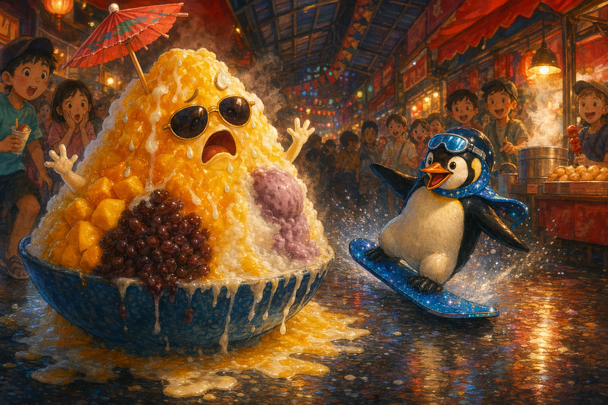
Story 07
Shaved Ice and the Summer Meltdown
On a sweltering night in Taipei, a flamboyant mountain of shaved ice learns that melting is not the end of the story.
Mandarin Spotlight: 剉冰 (cuòbīng) = shaved ice
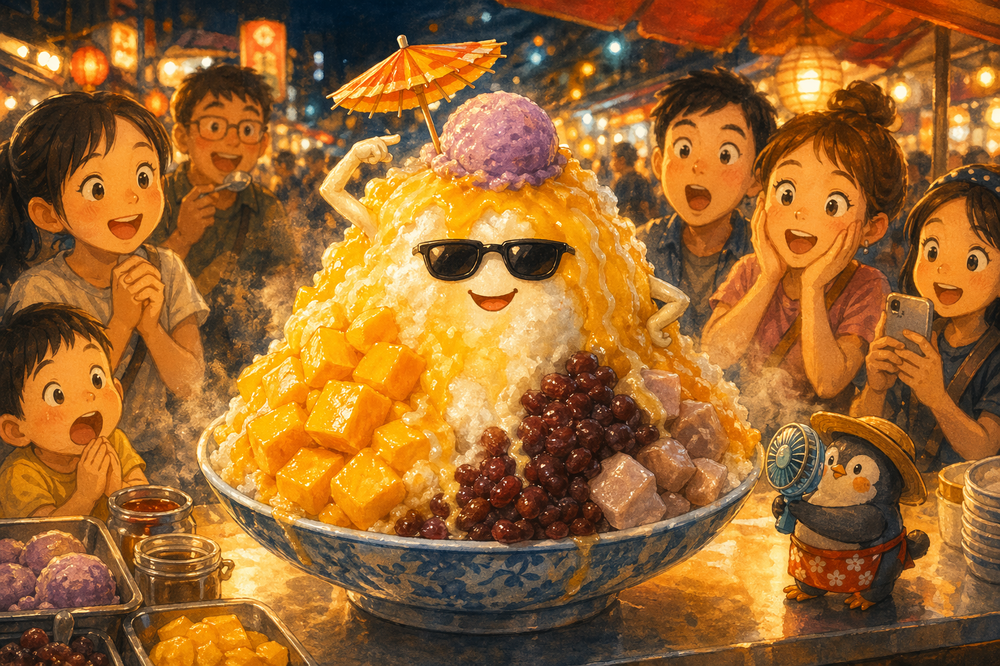
A Delicious Crisis
Bing was having a CRISIS. "THIS," he announced to everyone in Raohe Night Market, "is LITERALLY the WORST DAY of my ENTIRE EXISTENCE."
He was a glorious mountain of shaved ice, dripping with mango syrup, condensed milk, red bean, taro ice cream, and a tiny paper umbrella because fashion matters even in a meltdown.
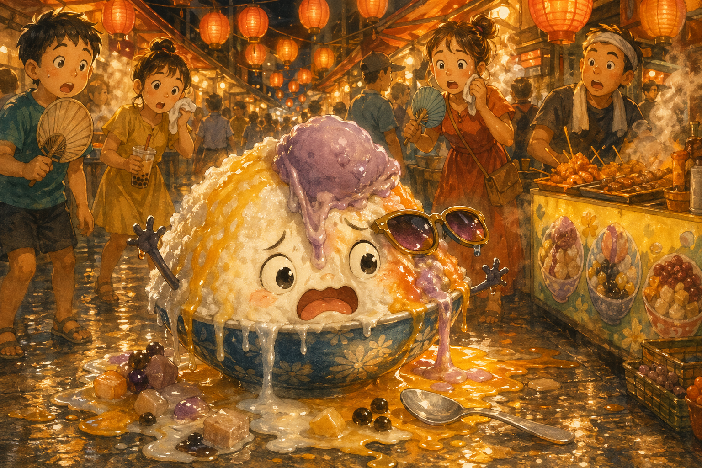
August in Taipei
It was August in Taipei, the kind of heat that made the whole market sigh, 熱死了 (rè sǐ le), "so hot I could die."
Bing's taro scoop slid sideways, his syrup ran in rivers, and his proud summit shrank by the minute. "I'm DIMINISHING!" he wailed.
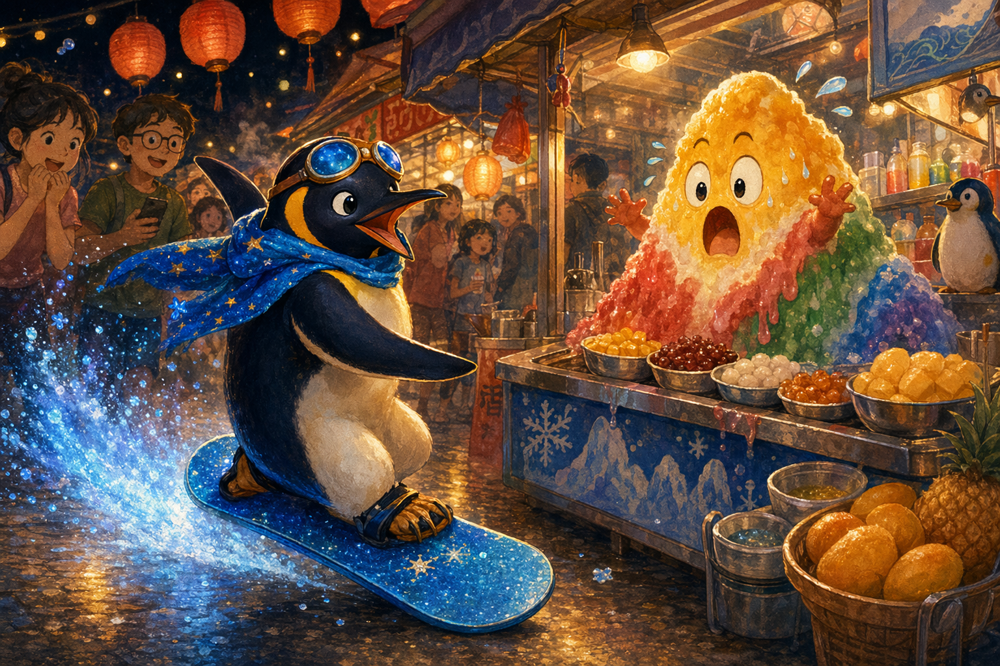
Piper Arrives
Then Piper Paddlefoot swooped into the night market on a glittery blue snowboard and stopped beside the stall in one cool, perfect slide.
Bing blinked through his drips. "Is that a SNOWBOARD? In a NIGHT MARKET? In AUGUST?" Piper grinned. "Slide into it."
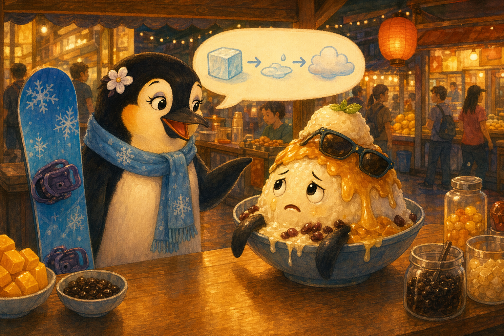
The Melt Talk
Piper listened to Bing explain the cruel laws of thermodynamics, then shrugged in that confident penguin way of hers.
"Ice melts," she said. "Glaciers melt. Snow melts. Then they become waves, clouds, rain, and ice again. You're not disappearing. You're changing shape."
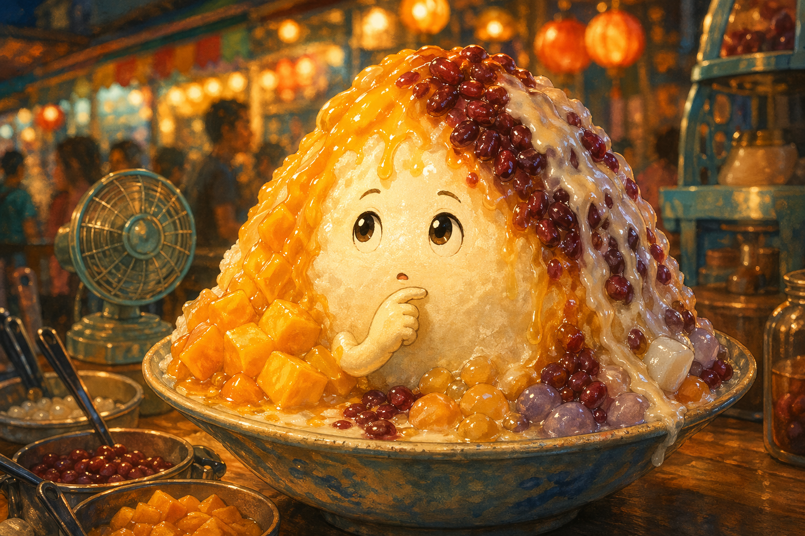
Half Mountain, Half Miracle
Bing looked down at his mango gold, ruby red bean, and white rivers of milk. He was messy, drippy, and glorious all at once.
"So this isn't the end of me?" he asked. Piper tapped her board. "Nope. Just the end of THIS fabulous shape."
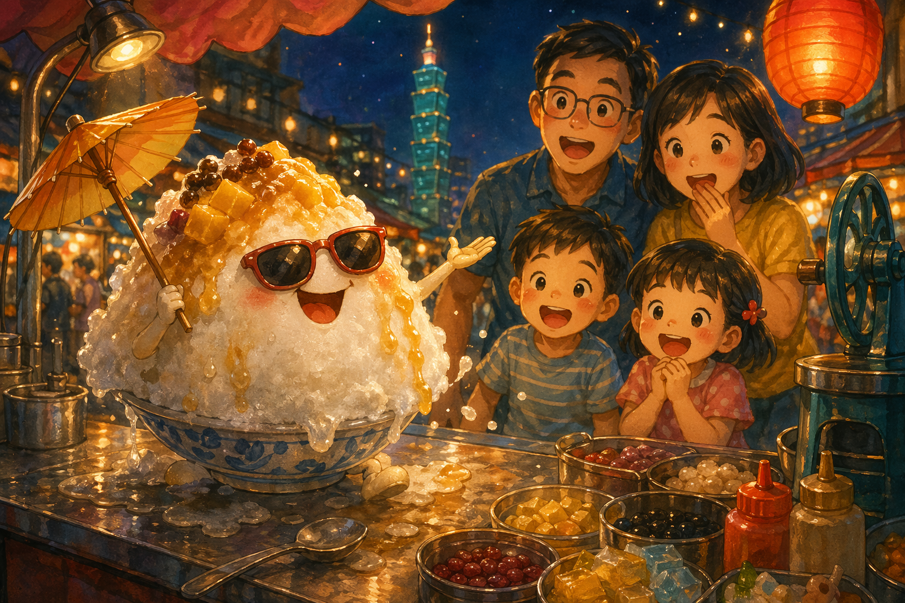
Sell the Melt
Something shifted in Bing's frozen heart. He straightened his sunglasses and boomed, "來來來!" (lái lái lái), "Come, come, come! The MOST DELICIOUS and most WONDERFULLY TEMPORARY shaved ice in Taipei!"
A family stopped at once. Even half-melted, Bing sparkled like a summer firework.
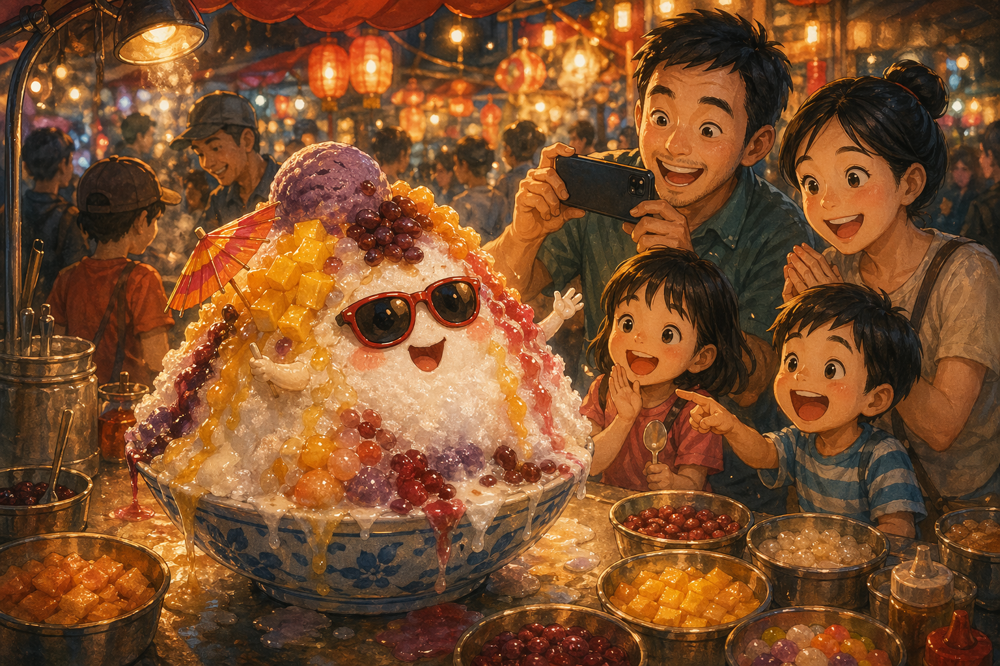
Perfectly Imperfect
The family bought fresh bowls, but it was Bing's dramatic, slightly slouchy masterpiece they wanted to photograph.
The kids gasped, the parents laughed, and Bing felt brighter than ever. Imperfect did not mean less beautiful. Sometimes it meant more.
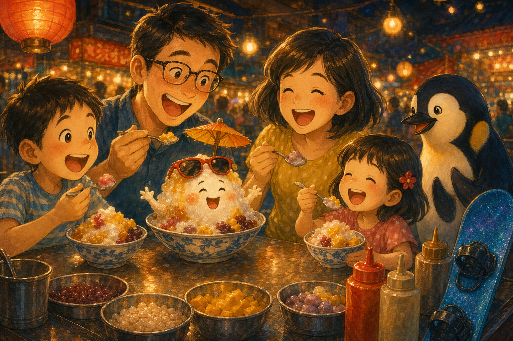
Every Sweet Drop
The family ate every icy, syrupy, melting spoonful. "好吃!" (hǎochī), said the father. "歐伊西!" (ōuyīxī), shouted the kids.
And Bing, disappearing bite by bite, felt only joy. He was not being lost. He was being loved exactly as he was.
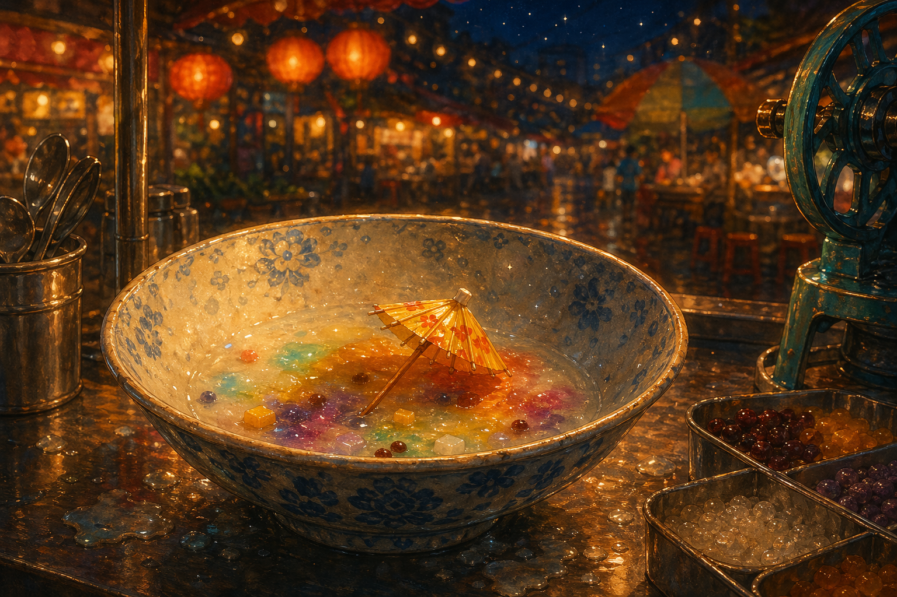
The Last Crystal
By 9:47 PM, only a little pool of sweet color remained, with his tiny umbrella sailing like a brave boat.
"Same time tomorrow?" Bing whispered. Piper hopped down from the counter. "Wouldn't miss it, mountain man."
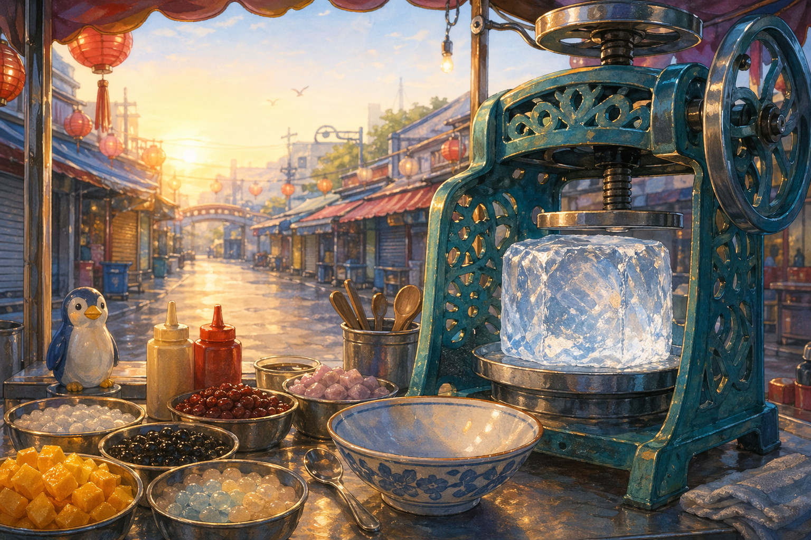
A New Mountain
The next morning, the vendor loaded a fresh block of frozen water into the shaving machine. A new mountain rose, taller and brighter than before.
Bing was back, ready for another glorious night. Melting, he realized, was just part of the ride.
Goodnight, sweet mountain. May you melt into sleep without fear, and wake tomorrow ready to shine in a brand-new shape.